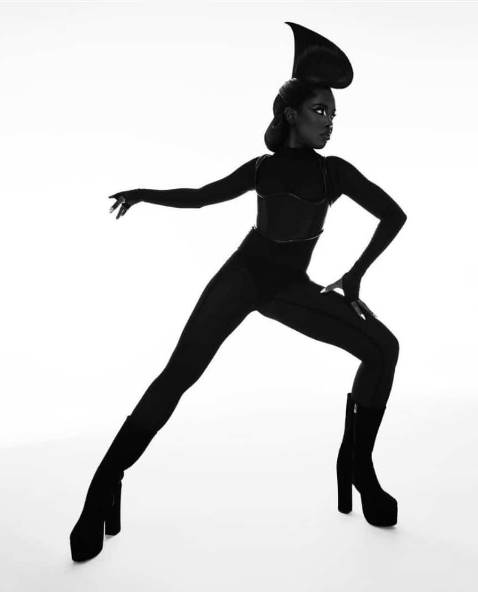

HTML&CSS DRAWING
TOOLS
Visual Studio Code, Reference Image, HTML and CSS.
DESIGN PROCESS
TASK
The task was to make an illustration using Ryan Destiny’s image as a reference; the illustration was to be made in CSS.
PROCESS
My goal going into making this project was to not include all the small details into the illustration, but to rather focus on getting the silhouette right; and to do this, I placed the reference image on the background and started placing shapes on top of it, I used the image as a guide. Below is an image that I used as a reference for this illustration.
SHAPES
CSS drawings, I have learnt are all about manipulating the shapes and positioning them. I personally used div tags to create my shapes; I created a div tag and gave it a class ‘Character’, this div acted as a container for all the shapes that I made to create my character/illustration including the reference image. I also had another container that was just going to house the different parts/shapes that made up the illustration; the reason why I added this container was because initially I thought that I would be able to manipulate the color of all the shapes inside this container from the container itself, I later learnt that this would not be possible. I did, however, manage to add a box shadow to this second container and that beautifully outlined the silhouette like I wanted.
Creating different shapes in CSS is all about manipulation of the border radius, and even the manipulation of different borders. For example, when creating a triangle, one would have to create three borders instead of four, that means you would have to create each individual border side and give it a size. Two of those sides, the left and the right border would have to have to be transparent, and only the bottom or the top border would have to have a color, giving the illusion of a triangle. See example below.
TRIMMING
I had to trim some areas in order to get the desired outline and shape; and I did this by adding other shapes and making those shapes transparent to conceal the parts of the illustration that I did not want visible.
RESULT